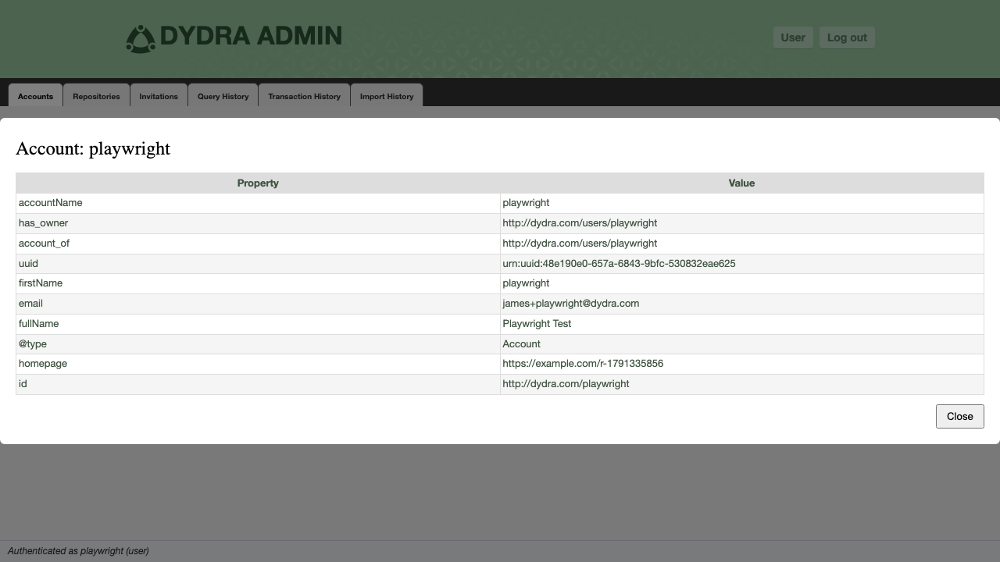
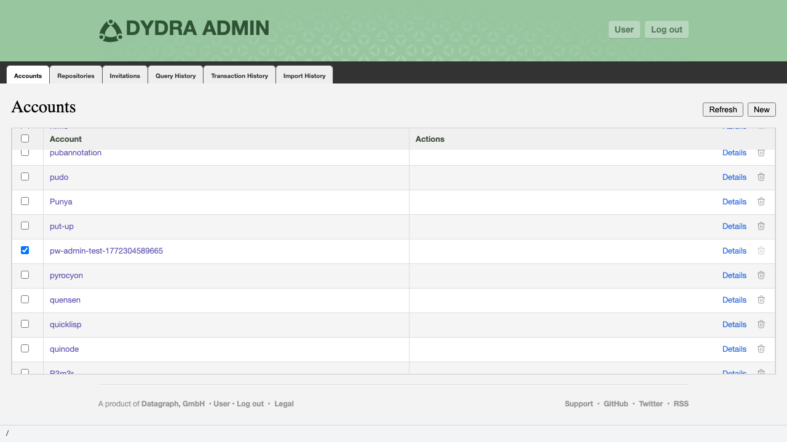

3.1 The Accounts Tab
The Accounts tab is the leftmost tab of the admin dashboard and the first to load on page render. It displays the complete list of accounts registered in the system, retrieved from GET {host}/system/accounts. Accounts are presented in a table sorted alphabetically by account name (case-insensitive comparison).

Figure 3.1: The Accounts tab displaying the system account list.
3.2 Table Structure
| Column | Contents | Notes |
|---|---|---|
| Checkbox | Selection control | Checked accounts determine which repositories are fetched in the Repositories tab. See Section 2.5. |
| Account Name | The account identifier, rendered as a link | The link target is {host}/ui/user/{accountName} — the account's view in the user application. |
| Actions | Details link; Delete button (Admin only) | The Delete button is suppressed for operator-level sessions. |
3.3 Tab Controls
| Control | Availability | Function |
|---|---|---|
| Refresh | Always | Re-fetches the complete account list from /system/accounts. Clears and rebuilds the table. |
| New | Admin only | Opens the New Account dialog. See Section 3.5. |
| Check All | Always | Toggles the selection state of all account checkboxes. Displays an indeterminate state when some but not all accounts are selected. |
3.4 Inspecting an Account
The Details link on each row opens a modal dialog presenting the account's full configuration as a key-value table. The data is fetched from GET {host}/system/accounts/{accountName}/configuration. The accessToken property is excluded from the display.

Figure 3.2: The account details dialog.
3.5 Creating an Account (Admin only)
New accounts are created from the New Account dialog.
POST {host}/system/accounts with the supplied name.
3.6 Deleting an Account (Admin only)
Account deletion is a permanent, irreversible operation. All repositories belonging to the account are also deleted.

Figure 3.3: The deletion confirmation dialog.
DELETE {host}/system/accounts/{accountName}.
3.7 Using Account Selection to Filter Repositories
Account checkboxes serve a secondary function: they determine the scope of the Repositories tab. The relationship is defined as follows:
- When no accounts are checked, the Repositories tab displays the message "No accounts selected".
- When one or more accounts are checked, the Repositories tab fetches and displays repositories for exactly those accounts.
- Changes to the account selection automatically refresh the Repositories tab if that tab has already been loaded.
To view repositories for a specific subset of accounts: check exactly those accounts, then click the Repositories tab.